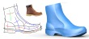
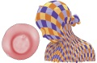
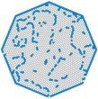

Intern students
- Siming Yan(PHD candidate from UT
Austin, 2022.5--now)
- Xin-Yang Zheng(PHD candidate from Tsinghua
Univ., 2021.7--now)
- Jie Pan(PHD candidate from USTC
Univ., 2021.4--now)
- Yu-Qi Yang (PHD candidate from TSinghua
Univ., 2017.7--2018.5, 2019.2--now)
- Hao-Xiang Guo (PhD candidate, from Tsinghua
Univ., 2018.1--now)
- Chun-Yu Sun (PhD Candidate, from Tsinghua
Univ., 2016.11--2022.5)
- Shi-Lin Liu (PhD Candidate, from USTC, 2014.7--2015.5, 2016.7--2021.6)
- Xin Li (Master Candidate, from PKU, 2020.9-2021.3)
- FengYuSheng Wang (Undergraduate, from USTC, 2019.2-2019.6, 2020.5--2020.9), now master student at Tokyo
U
- Qian-Fang Zou (Master Candidate, from USTC, 2018.9--2020.4)
- Xiaohan Liu (Master Candidate, from UCAS，
2018.9--2019.1)
- Ran Zhang (PHD Candidate, from IST Austria,
2018.8--2018.11)
- Ke Qu (Master Candidate, from Zhejiang Univ., 2018.6-2018.9)
- Chang-Jian
Li (PhD Candidate, from HKU, 2016.2--2016.7,
2016.11--2018.1, 2018.5-2018.8), now PostDoc at UCL.
-
Peng-Shuai Wang (PhD candidate, from Tsinghua,
2014.2--2018.7), now associate researcher at MSRA.
- Dr.
Xiao-Ming Fu (PhD Candidate, from USTC, 2012.9--2016.6),
now assistant researcher at USTC.
- Chong-Yang
Bai (Undergraduate, from USTC, 2015.9--2016.6), now PHD candidate at Dartmouth College.
- Dr. Caigui Jiang (PhD
Candidate, from
KAUST, 2015.6--2015.8), now research scientist at KAUST.
- Dr. Shuo
Jin (PhD Candidate, from CUHK, 2014.8--2015.1)
- Shuang-Ming
Chai (Undergraduate, from USTC, 2013.7--2014.5), now PhD
candidate at USTC.
- Dr.
Mario Deuss (PhD Candidate, from EPFL, 2013.6--2013.9)
- Dr. Pan
Hao (PhD Candidate, from HKU, 2012.9--2013.1), now
researcher at MSRA.
- Dr.
Yufei Li (PhD Candidate, from HKU, 2011.9--2012.2), now at
Merrill Lynch.
- Dr.
Jun Wang (PhD Candidate, from USTC, 2010.7--2011.1), now at BaiDu.
|
2022
|
|
|
Chun-Yu Sun, Xin Tong,
Yang Liu:
Semantic Segmentation-assisted Instance Feature Fusion for Multilevel 3D part Instance
Segmentation,
accepted to Computational Visual Media, 2022. [Project
page]
|
|
|
Xinyang Zheng, Yang Liu,
Peng-Shuai Wang, Xin Tong:
SDF-StyleGAN: Implicit SDF-Based StyleGAN for 3D Shape Generation, accepted to
Computer Graphics Forum (SGP), 2022. [Supplemental] [Project
page]
|
|
|
Peng-Shuai Wang, Xin Tong, Yang Liu:
Dual Octree Graph Networks for Learning Adaptive Volumetric Shape Representations, accepted to
ACM
Transactions on
Graphics(SIGGRAPH), 2022. [Project
page]
|
|
|
Hao-Xiang Guo, Shi-Lin Liu, Hao Pan, Yang Liu, Xin Tong, Baining Guo:
ComplexGen: CAD Reconstruction by B-Rep Chain Complex Generation,
accepted to ACM Transactions on
Graphics(SIGGRAPH), 2022. [Project page]
|
|
|
Chun-Yu Sun, Yu-Qi Yang, Hao-Xiang Guo,
Peng-Shuai Wang, Xin Tong, Yang Liu, Heung-Yeung
Shum:
Semi-Supervised 3D Shape Segmentation with Multilevel Consistency and Part Substitution,
accepted to Computational Visual Media. [Project page]
|
|
|
Zhi Deng, Yang Liu, Hao Pan,
Wassim Jabi, Juyong
Zhang, Bailin Deng:
Sketch2PQ: Freeform Planar Quadrilateral Mesh Design via a Single Sketch, IEEE
Transactions on Visualization & Computer
Graphics. [video].
|
2021
|
|
|
Long Ma, Sidan Yao, Jianming
Zheng, Yang Liu, Yuanfeng Zhou, Shiqing Xin, Ying He:
Constructing Self-Supporting Surfaces with Planar Quadrilateral Elements,
Computational Visual Media, 2022.
|
|
|
Yu-Qi Yang,
Peng-Shuai Wang, Yang Liu:
Interpolation-Aware Padding for 3D Sparse Convolutional Neural Networks,
ICCV 2021. [Project
page]
|
|
|
Peng-Shuai Wang, Yang Liu, Yu-Qi Yang, Xin Tong:
Spline Positional Encoding for Learning 3D Implicit Signed Distance Fields,
IJCAI 2021. [Project
page]
|
|
|
Shi-Lin Liu, Hao-Xiang Guo, Hao Pan,
Peng-Shuai Wang, Xin Tong, Yang Liu:
Deep Implicit Moving Least-Squares Functions for 3D Reconstruction,
CVPR 2021. [Code]
|
2020
|
|
|
Peng-Shuai Wang, Yu-Qi Yang,
Qian-Fang Zou, Zhirong Wu,
Yang Liu, Xin Tong:
Unsupervised 3D Learning for Shape Analysis via Multiresolution Instance Discrimination,
AAAI 2021. [Project
page]
|
|
|
Peng-Shuai Wang, Yang Liu, Xin Tong:
Deep Octree-based CNNs with Output-Guided Skip Connections for 3D Shape and Scene Completion,
CVPR 2020 Workshop. [Code]
|
|
|
Qian-Fang Zou, Ligang Liu, Yang
Liu:
Instance-level 3D shape retrieval from a single image by hybrid-representation-assisted joint
embedding, The Visual Computer, 2020.
|
|
|
Hao-Xiang Guo, Xiaohan Liu, Dong-Ming Yan, Yang
Liu:
Cut-enhanced PolyCube-Maps for Feature-aware All-Hex Meshing, ACM Transactions on
Graphics(SIGGRAPH), 2020. [supplemental], [Project
page].
|
|
|
Yu-Qi Yang, Shi-Lin Liu, Hao Pan,
Yang Liu, Xin Tong:
PFCNN: Convolutional Neural Networks on 3D Surfaces Using Parallel Frames, IEEE CVPR,
2020. [Project
page].
|
|
|
Changjian Chen, Jun Yuan, Yafeng Lu, Yang Liu, Hang Su, Songtao Yuan, Shixia Liu:
OoDAnalyzer: Interactive Analysis of Out-of-Distribution Samples, to appear in IEEE
TVCG, 2020. [Videos]
|
|
|
Shi-Lin Liu, Yang Liu, Lan-Fang Dong, Xin Tong: RAS:
A Data-driven Rigidity-Aware Skinning Model
for 3D Facial Animation, Computer Graphics Forum, 39(1), 581--594, 2020. [Videos]
|
2019
|
|
|
Lei Chu, Hao
Pan, Yang Liu, Wenping
Wang: Repairing Man-Made Meshes via Visual Driven
Global Optimization with Minimum Intrusion, ACM Transactions on
Graphics(SIGGRAPH Asia), 38(6), Article 158, 2019. [Project page].
|
|
|
Chun-yu Sun, Qian-fang Zou, Xin Tong,
Yang Liu:
Learning Adaptive Hierarchical Cuboid Abstractions of 3D
Shape Collections,
ACM Transactions on Graphics(SIGGRAPH Asia) , 38(6), Article 241, 2019. [Project page].
|
|
|
Lei Chu, Pengbo
Bo, Yang Liu, Wenping
Wang:
Surface Fairing towards Regular Principal Curvature Line Networks,
Computer Graphics Forum (Pacific Graphics), 2019.
|
|
|
Jie Zhu, Yunfeng Zhang, Jie Guo, Huikun Liu, Mingming Liu, Yang Liu, Yanwen Guo:
Label Transfer between Images and 3D Shapes via Local Correspondence Encoding,
Geometric Modeling and Processing - GMP 2019, Computer
Aided Geometric Design, 71, 255-266.
|
2018
|
|
|
Hao
Pan,
Shi-Lin Liu,
Yang Liu, Xin Tong: Convolutional Neural Networks on 3D Surfaces Using Parallel Frames,
arXiv:1808.04952, 2018.
|
|
|
Changjian
Li, Hao
Pan, Yang Liu, Xin Tong, Alla
Sheffer, Wenping Wang: Robust
Flow-Guided Neural Prediction for
Sketch-Based Freeform Surface Modeling, ACM Transactions on
Graphics(SIGGRAPH Asia) , 37(6), 2018. [Project page]
|
|
|
Peng-Shuai Wang, Chun-Yu Sun,
Yang Liu, Xin Tong: Adaptive O-CNN: A
Patch-based Deep Representation of 3D Shapes, ACM
Transactions on Graphics(SIGGRAPH Asia), 37(6), 2018. [Project page], Open source
code.
|
2017
|
|
|
Li-Ke
Ma, Yizhong
Zhang,
Yang Liu,
Kun Zhou,
Xin Tong: Computational Design and Fabrication of
Soft Pneumatic Objects with Desired Deformations, ACM
Transactions on Graphics(SIGGRAPH Asia), 36(6), 2017.
[Video],
[Project
page].
|
|
|
Peng-Shuai Wang, Yang Liu, Yu-Xiao
Guo, Chun-Yu Sun, Xin
Tong: O-CNN: Octree-based Convolutional Neural
Networks for 3D Shape Analysis, ACM Transactions
on Graphics(SIGGRAPH), 36(4), 2017. [Project
page], Open source code. |
|

|
Changjian
Li, Hao
Pan, Yang Liu, Xin Tong, Alla
Sheffer, Wenping Wang: BendSketch:
Modeling Freeform Surfaces
Through 2D Sketching, ACM Transactions on
Graphics(SIGGRAPH) , 36(4), 2017. [Project page] |
|
|
Shuo
Jin, Chengkai Dai, Yang Liu, Charlie C.L. Wang: Motion
Imitation Based
on Sparsely Sampled
Correspondence, Journal of Computing and
Information Science in Engineering, 2017.
[Video]
|
|
|
Saifeng Ni, Zichun Zhong, Yang Liu,
Wenping
Wang, Zhonggui Chen and Xiaohu Guo: Sliver-Suppressing
Tetrahedral Mesh
Optimization with Gradient-Based Shape Matching Energy,
Geometric Modeling and Processing - GMP 2017, Computer
Aided Geometric Design, 52-53, 247-261. [DOI]
|
2016
|
|
|
Yiqi Cai, Xiaohu Guo, Yang Liu,
Wenping
Wang, Weihua Mao,
and Zichun Zhong : Surface
Approximation via Asymptotic Optimal Geometric Partition,
IEEE Transactions on Visualization & Computer
Graphics , 23(12), 2613-2626, 2016. supplement
material, video. [DOI]
|
|
|
Xiao-Ming
Fu, Chong-Yang
Bai and Yang Liu: Efficient Volumetric
PolyCube-Map
Construction, Computer Graphics Forum (Pacific
Graphics) 35(7), 2016. Project
page, supplement material. [DOI] |
|
|
Xiao-Ming
Fu and Yang Liu: Computing
Inversion-Free
Mappings by
Simplex Assembly, ACM Transactions on
Graphics(SIGGRAPH Asia), 35(6), 2016. Project
page,
supplement
material, code. [DOI]
|
|
|
Peng-Shuai Wang, Yang Liu and Xin Tong: Mesh
Denoising via Cascaded Normal
Regression, ACM Transactions on
Graphics(SIGGRAPH Asia) , 35(6), 2016. Project page(code and data). [DOI] |
|
|
Pengbo
Bo, Yang Liu, Changhe
Tu, Caiming
Zhang and Wenping Wang: Surface Fitting
with Cyclide Splines,
Geometric Modeling and Processing - GMP 2016, Computer
Aided Geometric Design, 43(1), 2--15. [DOI]
|
2015
|
|
|
Peng-Shuai
Wang, Xiao-Ming
Fu, Yang Liu, Xin Tong, Shi-Lin Liu and Baining Guo: Rolling Guidance Normal Filter
for
Geometric Processing, ACM Transactions on
Graphics(SIGGRAPH Asia), 34(6), 2015. Data,
Program,
slides.
[DOI]
|
|

|
Xiao-Ming
Fu, Yang Liu and Baining Guo: Computing Locally
Injective
Mappings by
Advanced MIPS, ACM Transactions on
Graphics(SIGGRAPH) 34(4), 2015. Data.
[DOI]
|
|
|
Pan
Hao, Yang Liu, Alla
Sheffer, Nicholas
Vining, Chang-Jian Li and Wenping Wang: Flow Aligned Surfacing of
Curve
Networks,
ACM Transactions on Graphics(SIGGRAPH) 34(4), 2015.
data,
Project
page. [DOI]
|
|
|
Yufei
Li, Yang Liu and Wenping
Wang: Planar Hexagonal Meshing for Architecture,
IEEE Transactions on Visualization & Computer
Graphics , 95-106, 2015. IEEE TVCG spotlight
article for Jan. 2015. Appendix. [DOI]
|
before 2015
|
|
|
Xiao-Ming
Fu, Yang Liu, John Snyder and
Baining Guo: Anisotropic Simplicial Meshing
Using Local
Convex Functions, ACM Transactions on
Graphics(SIGGRAPH Asia) 33(6), 2014. [DOI], Anisotropic Mesh results, slides.
|
|
|
Mario
Deuss, Daniele Panozzo,
Emily Whiting, Yang
Liu,
Philippe Block, Olga Sorkine-Hornung and Mark Pauly: Assembling
Self-Supporting Structures,
ACM Transactions on Graphics(SIGGRAPH Asia) 33(6),
2014. [DOI], Video
and data. Project
page.
|
|
|
Lei Liu, Yongjie Zhang, Yang
Liu
and Wenping Wang: Feature-Preserving
T-mesh
Construction
Using Skeleton-based Polycubes, Computer Aided
Design (SPM 2014), 162-172. [DOI] |
|
|
Shixia
Liu, Yingcai
Wu, Enxun Wei,
Mengchen
Liu and Yang
Liu : StoryFlow: Tracking the Evolution of
Stories, IEEE InfoVis 2013 , IEEE
Transactions on Visualization & Computer Graphics
19(12), 2436-2445, 2013. Project page [DOI]
|
|
|
Yupeng Zhang, Teng Han, Zhimin Ren, Nobuyuki Umetani, Xin Tong,
Yang
Liu,
Takaaki Shiratori
and Xiang Cao: BodyAvatar: Creating
Freeform
3D Avatars
using First-Person Body Gestures, UIST 2013,
387-396. Project
page(Demo). [DOI]
|
|
|
Yang Liu, Pan Hao, John Snyder, Wenping Wang and Baining Guo: Computing
Self-Supporting Surfaces by
Regular Triangulation, ACM Transactions on
Graphics(SIGGRAPH) 32(4), 2013. Supplemental
material, slides. [DOI]
|
|
|
Yufei
Li, Yang Liu, Weiwei Xu, Wenping Wang and Baining Guo: All-Hex
Meshing using
Singularity-Restricted Field, ACM Transactions on
Graphics(SIGGRAPH Asia) 31(6), 177:1-177:11, 2012. Supplemental material
(videos
and data),
slides.
[DOI]
|
|
|
Lifeng
Zhu, Weiwei
Xu, John
Snyder,
Yang Liu,
Guoping Wang
and Baining Guo: Motion-Guided Mechanical Toy Modeling,
ACM Transactions on Graphics(SIGGRAPH Asia) 31(6),
127:1-127:10, 2012. Supplemental material. [DOI]
|
|
|
Dong-Ming
Yan, Wenping
Wang, Yang Liu and Zhouwang
Yang: Variational Mesh Segmentation via Quadric
Surface Fitting, Computer-Aided Design ,
44(11), 1072-1082, 2012. [DOI] |
|
|
Hao
Pan, Yi-King
Choi, Yang Liu, Wenchao
Hu,
Qiang Du, Konrad Polthier, Robust
Modeling of Constant Mean
Curvature
Surfaces, ACM Transactions on Graphics(SIGGRAPH)
31(4), 85:1-85:11, 2012. [Supplemental material, slides. [DOI]
|
|
|
Wenni
Zheng, Pengbo Bo,
Yang
Liu,
Wenping Wang: Fast B-spline Curve
Fitting by
L-BFGS,
Geometric Modeling and Processing - GMP 2012, Computer
Aided Geometric Design, 29(7), 448-462, 2012. [DOI]
|
|
|
Feng
Sun, Yi-King
Choi, Wenping
Wang, Dong-Ming Yan,
Yang Liu,
Bruno
Lévy: Obtuse Triangle Suppression in Anisotropic
Meshes, Computer Aided Geometric Design ,
28(9), 537-548, 2011. [DOI]
|
|
|
Yang Liu, Weiwei Xu, Jun Wang, Lifeng Zhu, Baining Guo, Falai Chen, Guoping Wang
: General
Planar Quadrilateral Mesh Design
Using Conjugate Direction Field, ACM
Transactions on Graphics(SIGGRAPH Asia) , 30(6),
140:1-140:10, 2011. [Errata: a term in Eqn.4 is missing
in the published version, please check the corrected
version.][DOI]Supplemental
material, slides. |
|
|
Dong-Ming
Yan, Wenping
Wang, Bruno
Lévy and Yang Liu: Efficient Computation
of
Clipped Voronoi
Diagram and Applications, Computer Aided Design.
This is a journal version of our GMP2010 paper. [DOI]
|
|
|
Bruno
Lévy and Yang Liu: Lp Centroidal Voronoi
Tessellation and its
Applications, ACM Transactions on Graphics (SIGGRAPH),
29(4), 119:1-119:11, 2010. [DOI][Supplemental material:
data,
sourcecode, videos and supplemental examples], slides |
|
|
Dong-Ming
Yan, Wenping
Wang, Bruno
Lévy and Yang Liu: Efficient Computation
of 3D
Clipped
Voronoi Diagram, Geometric Modeling and
Processing - GMP 2010, . [DOI]
|
|
|
Guodong
Rong, Yang Liu, Wenping
Wang, Xiaotian
Yin, Xianfeng Gu and Xiaohu Guo: GPU-Assisted
Computation of
Centroidal
Voronoi Tessellation, IEEE Transactions on
Visualization & Computer Graphics, 17(3),
345-356, 2011. [DOI][video and code] |
|
|
Dong-Ming
Yan, Bruno
Lévy, Yang Liu, Feng
Sun and Wenping Wang: Isotropic Remeshing with Fast
and Exact
Computation of Restricted Voronoi Diagram, Computer
Graphics Forum (Symposium on Geometry Processing 2009),
28(5), 1445-1454. [errata] [DOI][videos:
]
|
|

|
Yang Liu, Wenping
Wang, Bruno Lévy, Feng Sun, Dong-Ming
Yan, Lin Lu and Chenglei
Yang: On Centroidal Voronoi Tessellation Energy
Smoothness and Fast Computation, ACM
Transactions on Graphics, 28(4), 1-17. [DOI]
[software] |
|
|
Yang Liu and Wenping
Wang: On Vertex
Offsets of Polyhedral Surfaces,
Advances
in Architectural Geometry , 61-64, 2008.
|
|
|
Wenping
Wang, Yang Liu, Dong-Ming Yan, Bin
Chan, Ruotian Ling and Feng Sun, Hexagonal
Meshes with
Planar Faces,
Technical Report, Dept. of CS, HKU, 2008. |
|
|
Wenping
Wang and Yang Liu: A
Note on Planar Hexagonal Meshes, In I.Z. Emiris, F.
Sottile and T. Theobald, editors, IMA Volume 151:
Nonlinear Computational
Geometry , 221-233, Springer-Verlag, 2009.
[DOI][relevant talk: Slides
in Workshop on Polyhedral Surfaces and Industrial
Applications 2007] |
|
|
Yang Liu and Wenping
Wang: A Revisit to
Least Squares Orthogonal
Distance Fitting of Parametric Curves and Surfaces, Geometric
Modeling and Processing - GMP 2008, 384-397,
Springer. [DOI] |
|
|
Wenping
Wang, Johannes Wallner and
Yang Liu
: An Angle Criterion for Conical Mesh
Vertices, Journal for Geometry and Graphics
11(2), 199-208, 2007.
|
|
|
Falai Chen, Wenping Wang and Yang Liu:
Computing
Singular Points of Plane
Rational Curves, Journal of Symbolic Computation,
43(2), 92-117, 2008. [DOI]
|
|
|
Wenping
Wang, Bert Jüttler, Dayue
Zheng and
Yang
Liu: Computation of Rotation Minimizing Frame,
ACM Transactions on Graphics, 27(1), Article No. 2,
2008. [DOI]
|
|
|
Helmut
Pottmann and Yang Liu: Discrete Surfaces in
Isotropic
Geometry,
In R. Martin, M. Sabin and J. Winkler, editors, Mathematics
of Surfaces XII, volume 4647 of LNCS,
431-363. Springer, 2007. [DOI]
[Gallery
and Models] |
|
|
Helmut
Pottmann, Yang Liu, Johannes Wallner, Alexander Bobenko and Wenping
Wang: Geometry of Multi-layer Freeform
Structures for Architecture, ACM Transactions on
Graphics(SIGGRAPH) 26(3), Article No. 65, 2007. [DOI]
|
|
|
Kin-Shing D. Cheng, Wenping Wang, Hong Qin, Kwan-Yee K. Wong, Huaiping Yang and Yang
Liu:
Design and
Analysis of Optimization
Methods for Subdivision Surface Fitting, IEEE
Transactions on Visualization and Computer Graphics,
13(5), 878-890, 2007. [DOI]
|
|
|
Dong-Ming Yan,
Yang Liu
and Wenping
Wang: Quadric Surface Extraction by Variational
Shape Approximation, Geometric Modeling and Processing
- GMP 2006: 4th International Conference, 73-86, 2006. [Errata][
DOI]
|
|
|
Yang Liu, Helmut Pottmann, Johannes Wallner, Yong-Liang
Yang and Wenping Wang: Geometric
Modeling with Conical Meshes and Developable Surfaces,
ACM Transactions on Graphics(SIGGRAPH), 25(3),
681-689, 2006. [DOI]
|
|
|
Yang Liu, Helmut
Pottmann and Wenping Wang: Constrained
3D Shape Reconstruction Using
a Combination of Surface Fitting and Registration, Computer
Aided Design, 38(6), 572-583, 2006. [DOI] |
|
|
Yi-King
Choi, Wenping
Wang, Yang Liu and Myung-Soo
Kim: Continuous Collision Detection for Two
Moving Elliptic Disks, IEEE Transactions on
Robotics, 22(2), 213-224, 2006. [DOI]
|
|
|
Wenping
Wang, Helmut Pottmann
and
Yang Liu:
Fitting
B-spline Curves to Point Clouds by
Curvature-Based Squared Distance Minimization, ACM
Transactions on Graphics 25(2), 214-238, 2006. [DOI]
|
|
|
Yang Liu, Huaiping
Yang and Wenping Wang: Reconstructing B-spline Curves
from Point
Clouds A Tangential Flow Approach Using Least Squares
Minimization, International Conference on Shape
Modeling and Applications 2005, 4-12. [DOI] |
|
Falai Chen, David Cox and Yang Liu:
The
μ-basis and Implicitization of
a Rational Parametric Surface, Journal of Symbolic
Computation , 39(6)689-706, 2005. [DOI]
|
|
|
Kin-Shing D. Cheng, Wenping Wang, Hong Qin, Kwan-Yee K. Wong, Huaiping Yang and Yang
Liu:
Fitting
Subdivision Surfaces to
Unorganized Point Data Using SDM, Proceedings.
12th Pacific Conference on Computer Graphics and
Applications , 16-24, 2004. [DOI]
|
|
|
Yang Liu and Falai
Chen: Algebraic Conditions for Classifying the
Positional Relationships between Two Conics and Their
Applications, J. Comput. Sci. Tech. 19(4),
665-673, 2004. [DOI]
|
|